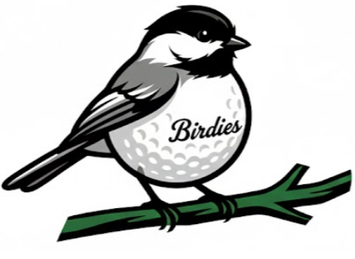
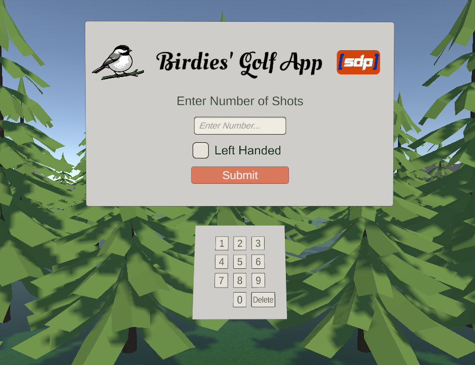
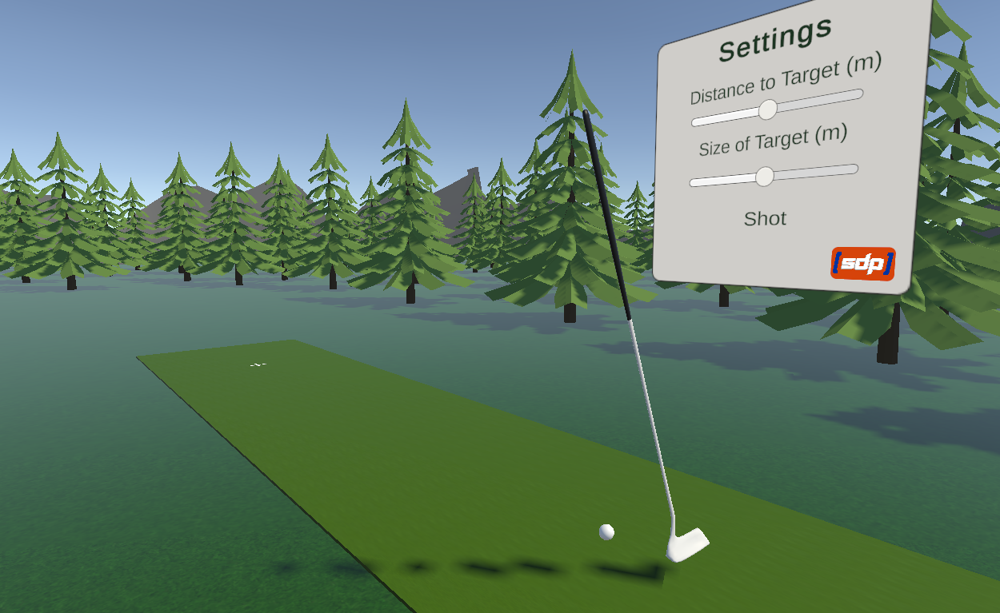

A custom virtual reality (VR) golf putting application for the Meta Quest 3 to support research and instruction in motor learning.
Birdies' Golf App is a custom virtual reality (VR) golf putting application developed for the Meta Quest 3 to support research and instruction in motor learning. Motor skill acquisition relies on structured, repetitive practice combined with precise and objective performance feedback. However, many existing VR golf applications prioritize entertainment over scientific utility, offering limited experimental control and minimal access to detailed performance data. This creates challenges for instructors and researchers who aim to study skill development in controlled environments.
Birdies' Golf App addresses these limitations by closely recreating the physical golf putting setup used in the Boise State University KINES 376 – Laboratory for Motor Learning and Performance course. Within the virtual environment, instructors can systematically manipulate key practice variables, such as target distance and target size allowing for carefully designed experiments. Additionally, the app captures trial-level performance metrics throughout a session and generates a performance report after the session is completed. This enables students and researchers to evaluate progress over time and investigate whether skills acquired in VR transfer effectively to real-world golf putting performance, contributing to a deeper understanding of motor learning processes.
Developed for the Meta Quest 3 using Unity, this VR application is a two-part experience designed to track a user's accuracy and give them immediate, clear feedback on their performance.
When a user opens the app, they start at a main title screen where they can set up their session. They are given a simple menu where they can type in exactly how many shots they want to take. There is also a quick toggle for "Left Handed" mode to make it comfortable for left-handed users. Once they submit their choices, they are instantly teleported to the main activity space.


In this second scene, the user is greeted with another menu that lets them customize their challenge. They can easily change how far away the target is and adjust how big or small the target appears.
Once the setup is done, the user takes the exact number of shots they chose at the beginning. After they finish their final shot, the app instantly generates a performance report. This report shows exactly how far off each shot was from the center in both the left-to-right (X) and up-and-down (Y) directions. It also provides an overall average of their scores so they can see how well they did overall.
At the end of the report, the user is given the choice to start a new session. If they click yes, the app loops right back to the beginning, allowing them to adjust their settings and try again.
Boise State Kinesiology Department’s Dr. Mariane Bacelar has hypothesized about the link between motor skill acquisition in a virtual environment and the comparable real world motor skill. More specifically, about whether learning to putt in a virtual environment will improve students’ ability to putt in the real world. To test this hypothesis, Dr. Bacelar found herself in need of a VR application that mimics her lab environment as closely as possible while being able to change select variables and report a specific set of statistics in a format that fits into the structure of her Motor Learning and Performance Laboratory.
To that end, we, Team Birdies, created a lab-accurate VR simulator that allows students to practice this motor skill in a way that is conducive to Dr. Bacelar’s studies. Our primary focus being on staying true to the real lab experience, to create an experience that is suitably engaging for students, yet not distracting, that is true to using a putter, the speed of the golf ball, and the physical forces acting upon it.
Developer
Developer
Developer